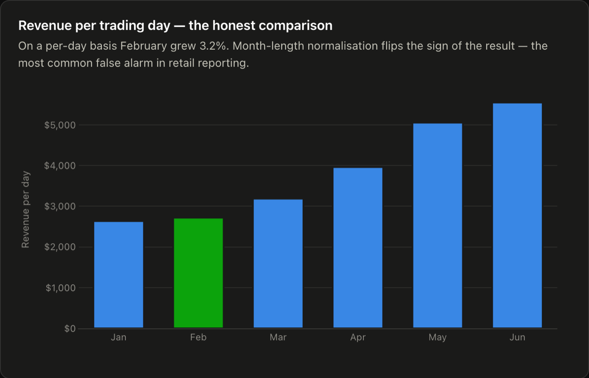
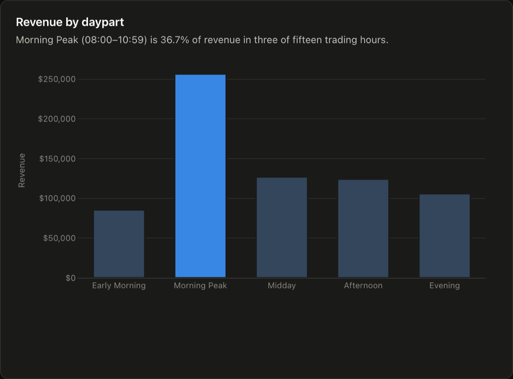

Case study · Growth decomposition
Coffee Shop Sales
Every dollar of growth came from traffic. Basket size never moved.
- Scale
- 149,116 transaction lines · 3 NYC stores · 6 months
- Role
- Sole analyst — raw extract to dashboard
Context
Three coffee shops in New York more than doubled revenue over six months. Before anyone credits a price change, a new menu or a marketing push, it is worth establishing which lever actually moved.
Revenue is Orders × Average Order Value, and those two are driven by entirely different things. More people through the door is a location, hours and awareness problem. A bigger basket is a menu, pricing and upsell problem. Knowing which one produced the growth decides where the next effort goes — and the answer is not visible in a revenue chart.
The data
[[REPLACE: dataset name and link]] — 149,116 transaction lines across three stores over six months, carrying timestamp, store, product, unit price and quantity.
The grain was wrong, and it mattered. transaction_id
looks like an order identifier and was being used as one. It is not: it identifies a
line item. A customer buying a latte and a croissant produces two
“transactions”. Average order value was therefore being reported as $4.69 when the true
figure — after grouping lines back into orders — is $5.98, 27% higher.
That class of error survives indefinitely, because the wrong number looks entirely plausible. Nothing about a $4.69 average is suspicious for a coffee shop. It only surfaces if you check what one row represents before dividing by it, and it corrupts every downstream metric with an order count in the denominator.
[[REPLACE: anything else you had to clean — duplicate lines, zero-value or refund rows, products with a null price, timestamps outside trading hours. Include how many rows were affected, and whether you dropped or kept them.]]
Approach
Decompose revenue into its two components and look at each on its own: Revenue = Orders × AOV.
Over the six months, orders grew 104% while average order value moved −0.1%. One lever did all of the work and the other sat completely untouched. That reframes the question from “why is revenue up” to “what is bringing more people through the door, and can we do more of it”.
The second correction was the time comparison. A raw month-over-month total makes February look like a decline — purely because it is three days shorter than January.

Why decomposition before segmentation. With revenue moving this much, cutting the data by store, product or hour would have shown growth almost everywhere and explained nothing. The identity narrows the question first: once you know basket size is flat, every basket-side cut can be set aside, and the traffic side is worth the detailed look. Segmentation is much more informative after the question has been narrowed than before.
Result
Growth was 100% traffic and 0% basket — and the true AOV was $5.98, not $4.69.
Two things came out of it. The corrected average order value replaced $4.69 as the baseline for every metric that divides by order count. And the growth attribution means effort should go to the levers that affect footfall — while any initiative aimed at raising basket size now starts from the knowledge that six months of trading did not move it at all.
The traffic itself turns out to be heavily concentrated.

[[REPLACE: what you recommended on the back of the daypart concentration — staffing against the morning peak, pre-order or throughput at the counter, a targeted off-peak play. One or two concrete sentences; this is the part that shows you can turn a chart into a decision.]]
What this cannot show. Six months of trading from a single business, with no control period and no price history: the decomposition describes what happened, not what caused it. “Traffic grew” is an observation about the mechanism of growth, not an explanation of its source.